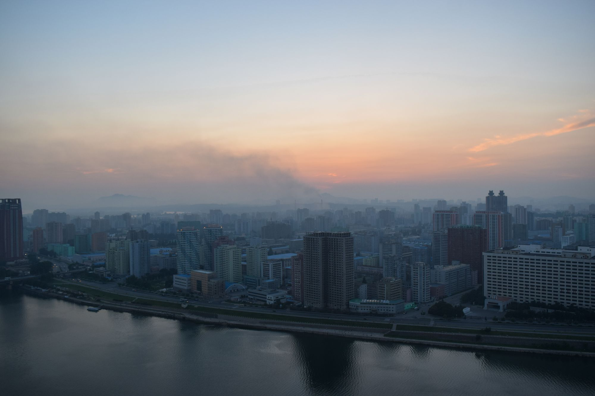
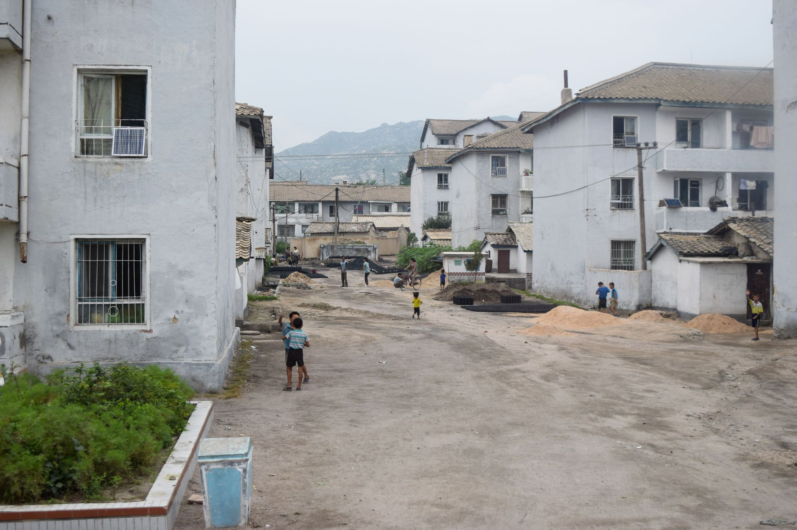
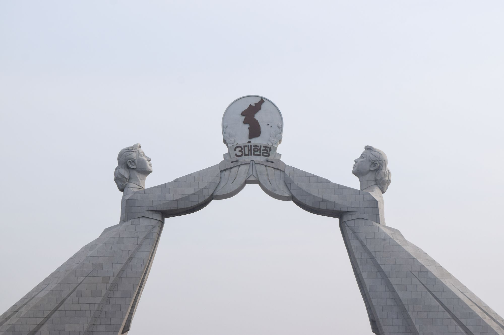
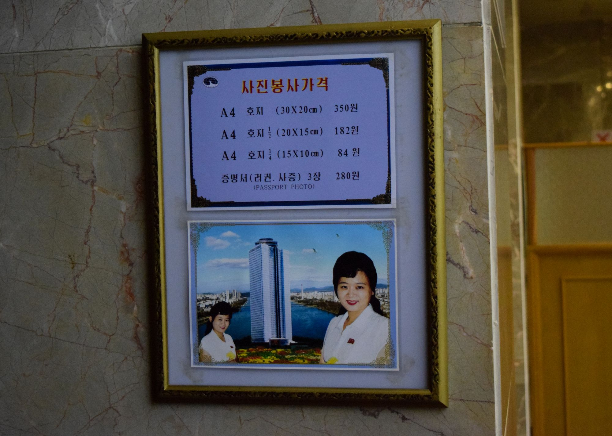
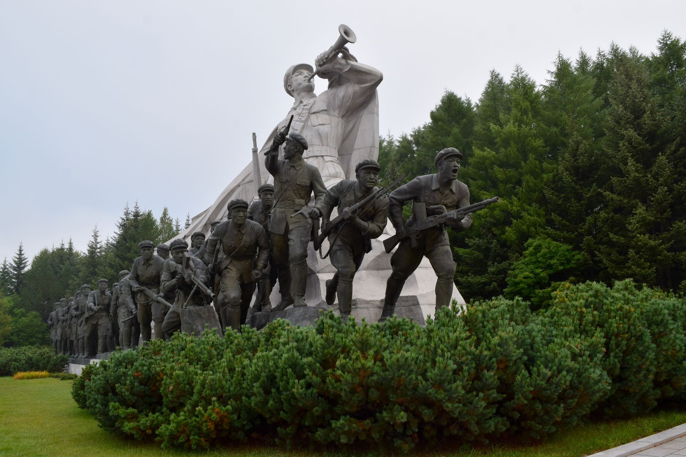

Photos of North Korea

I spent some time in North Korea (DPRK), via a specialist travel agency. I didn't get as many good photos as I would have liked, but below are some of the better ones.













I spent some time in North Korea (DPRK), via a specialist travel agency. I didn't get as many good photos as I would have liked, but below are some of the better ones.